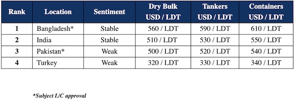

inWeekly Demolition Reports17/07/2023

It has been another frustrating week across all of the major ship recycling destinations, with prices marooned/ flat and businesses yet to fully resume at pace following the conclusion of Eid holidays.
In the interim, the good news has of course been the accession of the Bangladeshi Ship Recycling Sector to the Hong Kong Convention (HKC), as further progress is made in recycling markets before the convention formally enters into force.
Meanwhile, the lack of tonnage is also starting to subside as prices seem to further correct / stabilize and Ship Owners & Cash Buyers start to accept the reality that current prices are here to stay. Moreover, as Vessel Owners head off on their summer holidays, those with units on the verge of surveys are also making the decision to sell, all at a time when constant rains are seeing sub-continent yards operate at minimal labor capacity.
Bangladeshi steel mills too are yet to fully resume operating at capacity, which is why demand for new vessels remains rather muted. As such, even on any available tonnage, prices on offer remain way below expectations and the realistic prices of today.
L/Cs and financing issues once again burden the Bangladeshi market; however, this is expected to ease in the coming week(s) as End Buyers try again to negotiate acceptable rates with the Central State Bank (as witnessed earlier this year).
After years of turmoil, Pakistan recently received encouraging news of an IMF loan that will see about USD 3 billion committed over the next 9 months, further easing the liquidity crisis in the country. The first installment of USD 1.2 billion has already been received, bringing some much-needed economic relief & stability to the country and we may finally see them re-enter the ship recycling realm once commercial banks resume issuing L/Cs.
Finally, at the far end and amidst the ongoing scarcity of tonnage, the Turkish market faces further downfalls in fundamentals this week.
For week 28 of 2023, GMS demo rankings / pricing for the week are as below.

📄 Download PDF: Ship-recycling-market-insight-week-28-2023-Marooned.pdfSource: GMS,Inc. ,https://www.gmsinc.net/gms_new/index.php/web